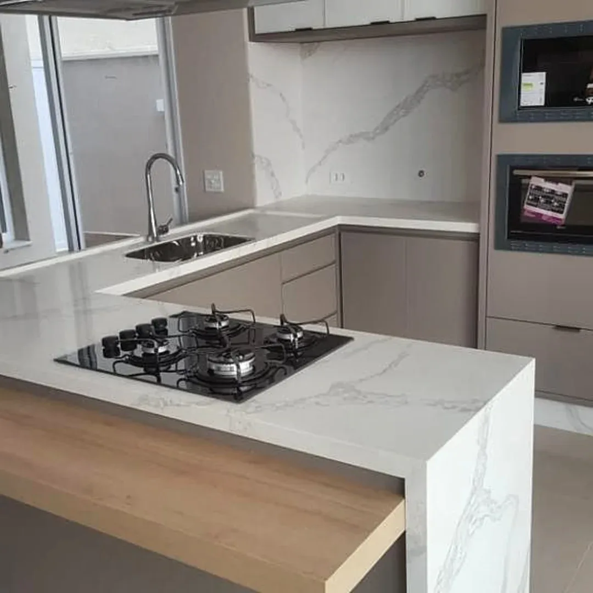
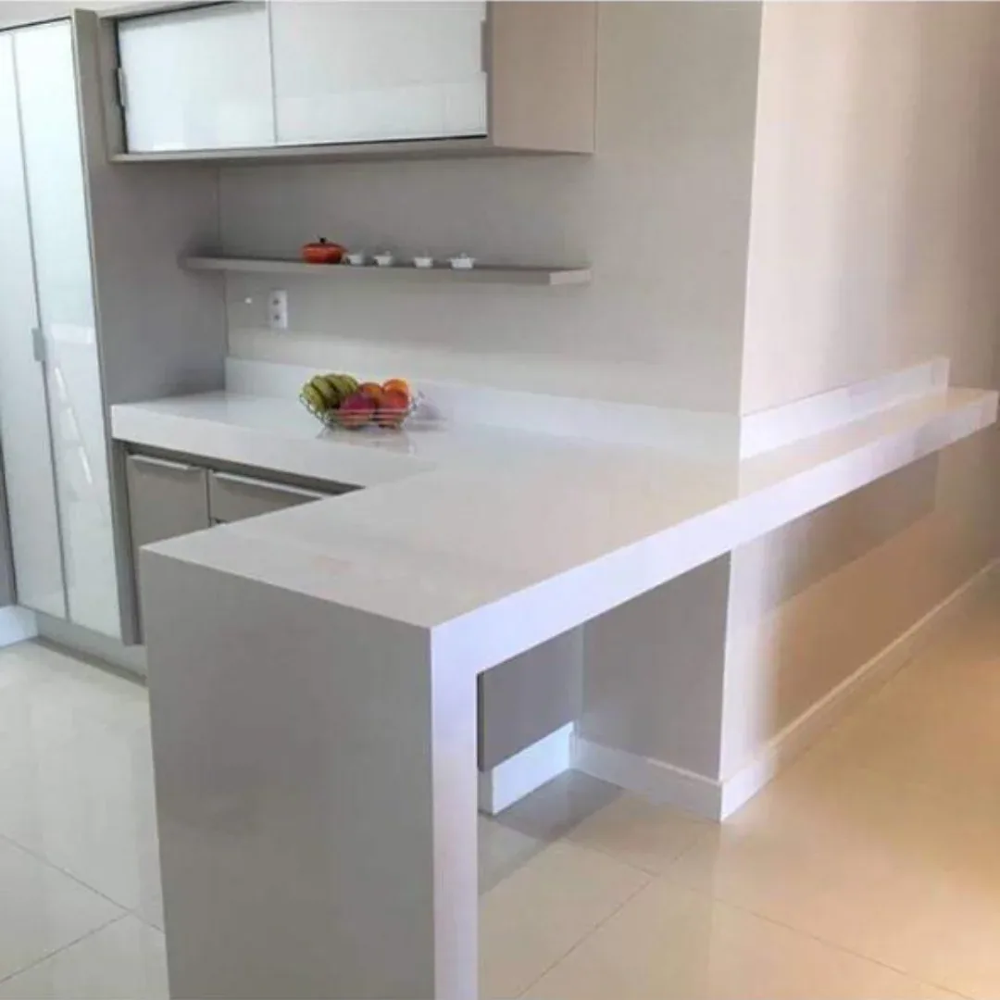
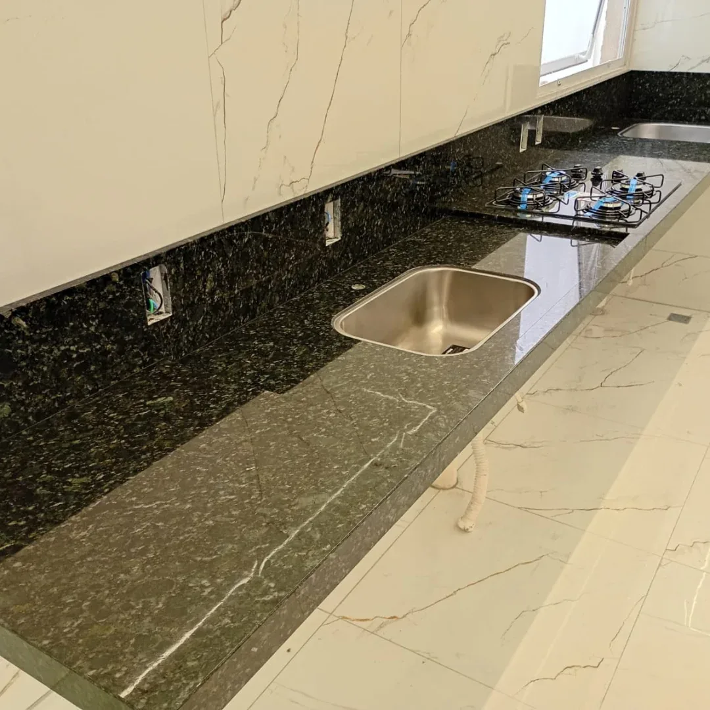

Pias e bancadas de cozinha
Recorte para cuba e cooktop, bordas trabalhadas e frontão no mesmo material.
São 15 anos cortando mármore, granito, quartzo e lâmina sob medida. A bancada não termina na pedra: você recebe a peça pronta, instalada e conferida, com a mesma pessoa te atendendo antes, durante e depois da venda.

O que separa uma bancada boa de uma bancada cara
Duas marmorarias podem cortar a mesma chapa e entregar resultados diferentes. A diferença aparece na finalização da borda, no encaixe da cuba, no alinhamento das emendas e no dia em que a peça chega na obra.
Mármores nacionais e importados, granitos, quartzos e lâminas ultracompactas. Trabalhamos com todos os tipos, do nacional ao importado.
É onde a JMF concentra o cuidado: borda, recorte, encaixe e alinhamento conferidos antes da peça sair da fábrica.
Prazo definido junto com o orçamento e cumprido, porque obra parada esperando marmoraria custa caro.
O atendimento depois da instalação é o mesmo da pré-venda e da venda. Você continua falando com quem te vendeu.

Quem faz
A JMF está há 15 anos no mercado, em Americana. É uma empresa familiar e enxuta: o Fábio cuida da produção e está na pedra desde os 12 anos de idade, a Gisele cuida das vendas e do escritório, os dois filhos do casal trabalham junto e mais dois funcionários completam a equipe.
Isso muda uma coisa prática: a peça que sai daqui passou pela mão de quem é dono do negócio. Não existe camada de intermediário entre quem vende e quem corta.
Atendemos cliente final, construtor e arquiteto com o mesmo padrão: material de primeira, acabamento conferido peça por peça e prazo cumprido. A satisfação de quem compra é o que sustenta a JMF há 15 anos.
Materiais
Cada material resolve um problema diferente. Abaixo, o que considerar antes de escolher a superfície da sua cozinha, do seu lavatório ou da sua área gourmet.
Superfície de engenharia com alta densidade e cor uniforme de ponta a ponta. É a escolha de quem quer previsibilidade: a peça instalada é igual à amostra vista no orçamento.
Pedra natural de veio marcado, cada chapa é única. Entrega o desenho que material nenhum reproduz igual.
O material mais resistente do dia a dia brasileiro: aguenta calor, risco e uso pesado sem drama.
Placas de grande formato e espessura reduzida. Permitem revestir painéis inteiros, nichos e frontões com pouquíssimas emendas, mantendo a continuidade do desenho.
Na dúvida entre dois materiais, a gente compara os dois na sua obra: uso, orçamento e acabamento. Tirar a dúvida no WhatsApp
Aplicações
Tudo sob medida, projetado a partir da medição feita na sua obra.
Recorte para cuba e cooktop, bordas trabalhadas e frontão no mesmo material.
Bancadas para churrasqueira, cooktop e apoio, pensadas para uso intenso.
Peças de maior porte, com saia, encaixe de cooktop e alinhamento de emenda.
Cuba esculpida ou de apoio, com bancada suspensa ou sobre gabinete.
Revestimento de parede, nichos iluminados e frontões em placa contínua.
Tampos de mesa, aparadores e peças especiais cortadas sob medida.
Como funciona
Um processo claro do primeiro contato até a instalação. Sem surpresa de valor no meio do caminho.
Você chama no WhatsApp e conta o que precisa: ambiente, tipo de peça e a fase da obra. Já dá para indicar caminhos de material aqui.
Definimos junto entre mármore, granito, quartzo ou lâmina ultracompacta, considerando uso, ambiente e o quanto você quer de manutenção depois.
A medição é feita na obra, com os móveis e pontos hidráulicos já definidos. É ela que garante que a peça encaixe de primeira.
Valor e prazo de entrega definidos antes de a produção começar. O que foi combinado é o que vale.
Corte, acabamento e finalização na fábrica. Você recebe a bancada pronta e instalada, e o atendimento continua depois disso.
Onde atendemos
A fábrica fica em Americana, no interior de São Paulo, e é de lá que sai cada peça. Atendemos toda a região de Campinas e também obras na capital.
Para obras mais distantes o caminho é o mesmo: medição feita no local, produção na nossa fábrica e entrega com a peça instalada. Quem coordena o seu atendimento aqui é quem acompanha a obra até o fim, independente da distância.
Atendemos clientes finais, construtores e arquitetos.

Obras
Registros reais de obras executadas, incluindo as etapas de instalação. É assim que a peça chega e é assim que ela fica.
Reputação
Em 15 anos de fábrica, o que sustenta a JMF é o resultado entregue: bancada certa, acabamento conferido e prazo cumprido, obra após obra.
É por isso que boa parte de quem compra volta e ainda leva a JMF para a próxima obra, do cliente final ao arquiteto e ao construtor.
Perguntas frequentes
Sim. A fábrica fica em Americana e atendemos Americana, Santa Bárbara d'Oeste e São Paulo capital. A medição é feita na sua obra, a peça é produzida aqui e entregue instalada.
Entregamos a bancada pronta e instalada. Essa é a entrega da JMF: você não fica com a peça na obra esperando alguém para colocar.
O quartzo é uma superfície de engenharia com cor uniforme e manutenção simples, boa para quem quer bancada clara sem variação de veio. O granito é pedra natural e o mais resistente para uso pesado, calor e área externa. O mármore é pedra natural de veio marcado e visual único, mais indicado para lavatórios, painéis, mesas, soleiras e peitoris do que para uma cozinha de uso intenso.
O quartzo é bem menos poroso que as pedras naturais, então resiste bem a manchas do dia a dia. O cuidado principal é limpar derramamentos de produtos agressivos e evitar exposição direta e prolongada ao sol.
Sim. Trabalhamos com todos os tipos de materiais, nacionais ou importados: mármores, granitos, quartzos e lâminas ultracompactas.
Pode. A escolha do material faz parte do processo, antes do fechamento do orçamento. Chame no WhatsApp para combinar.
Depende do material escolhido, da metragem, dos recortes e do tipo de acabamento de borda. Por isso o orçamento é feito depois da medição: assim o valor que você recebe é o valor final, não uma estimativa que muda depois.
De segunda a sexta, das 8h às 18h, e aos sábados das 8h às 12h. Pelo WhatsApp você pode mandar a mensagem a qualquer momento que respondemos no horário comercial.
Marmoraria em geral: pias de cozinha, área gourmet, lavatórios, painéis, nichos, mesas, soleiras e peitoris, tudo sob medida.
Orçamento
Atendimento direto com quem produz. Você conta o ambiente, a gente indica o material e fecha valor e prazo antes de qualquer coisa começar.
Segunda a sexta, 8h às 18h . Sábado, 8h às 12h